Every feature, explained with screenshots of the app
App version {{VERSIONE}} · guide updated on {{DATA}}
Contents
Part 1 · Getting started
1 · What DoctorWood is00
2 · First start: Owner or Workshop00
3 · The Home00
Part 2 · Customers and jobs
4 · Customers00
5 · Jobs and guided paths00
6 · Site surveys with photos00
7 · Calendar00
Part 3 · Design and sell
8 · Panel cutting00
9 · Quotes, signature and invoicing00
10 · Stock00
Part 4 · In the workshop
11 · Assembly sheets00
12 · The workshop tablet00
13 · Connecting phone and tablet00
Part 5 · Your data
14 · Backing up your data00
15 · Security and privacy00
Part 6 · Settings and help
16 · Settings00
17 · If something goes wrong00
18 · Contact, reports and support00
19 · What's new, version by version00
This guide describes every feature, one section of the app per chapter. Read it from the start the first time, then use it for reference.
The Tutorials (another PDF) explain one thing at a time, in a few steps: «how to make a quote», «how to connect the tablet»…
The app speaks English and Italian. Choose in Settings → Appearance → Language; with «Automatic» it follows the phone's language. Screenshots show the English screens, and buttons are written as they appear in the app.
§§p1§§
Part 1
Getting started
What DoctorWood is and who it's for
First start: the owner's phone or the workshop tablet
Finding your way around the Home
§§c1§§
1What DoctorWood is
DoctorWood is workshop management software for carpenters and joiners that works without internet: site surveys with photos, panel cutting, quotes, customers and jobs, calendar, stock and assembly sheets. There's an Android app (phone and tablet) and the same app as a page to open on a computer.
Everything stays on your device. The app sends nothing by itself and has no ads or accounts.
Two ways to use it:Owner and Workshop.
Protected data: fingerprint lock, always‑encrypted backups, no traces left around the phone.
The sections of the app
Section
What you find
Chapter
Home
Today, things to do, jobs in progress, data and backup
3
Customers
Your customer records
4
Jobs
Your jobs, each with its next step
5
Survey
Measurements and dimensions drawn on site photos
6
Calendar
Appointments, installations, workshop days
7
Cutting
How to cut panels with less waste
8
Quotes
PDF quotes, customer signature, file for invoicing
9
Stock
Price list, stock levels, panel offcuts
10
Sheets
Technical sheets and assembly instructions
11
Settings
Appearance, defaults, workshop, data, updates
16
Installing and updating the app
DoctorWood for Android is free to download from GitHub, on the page of published versions: github.com/CrsLabs/DoctorWood/releases. It needs Android 10 or later.
On the phone or tablet open the page and download the DoctorWood-….apk file of the latest version.
Open the downloaded file. The first time Android asks you to allow installs from the browser (or the Files app): turn the switch on and go back.
Tap Install. Done.
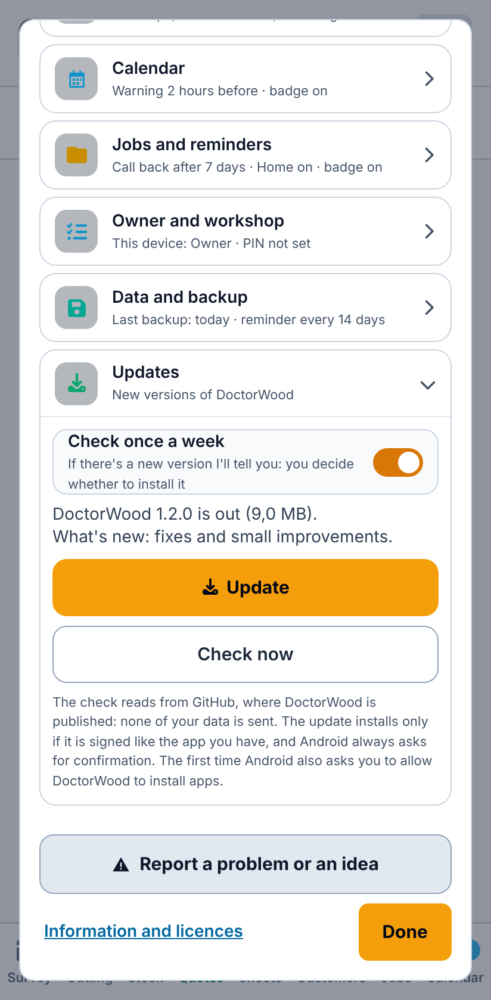
Settings → Updates
Updates arrive by themselves. Once a week DoctorWood checks for a new version. If there is one, it asks «DoctorWood … is out» with what's new and the buttons Update and Later. With Update the app downloads the new version and Android asks you to confirm: all your data stays. This also happens on the workshop tablet.
In Settings → Updates you can turn the weekly check off or use Check now.
An update installs only if it is signed like the app you have and is exactly the published file (DoctorWood checks its «fingerprint»). The check only reads from GitHub: none of your data leaves the device.
§§c2§§
2First start: Owner or Workshop
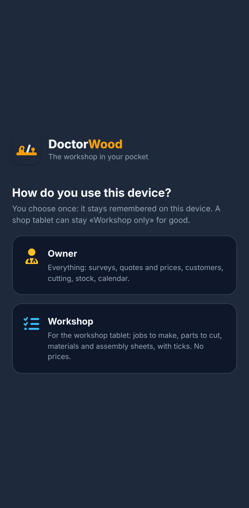
How do you use this device?
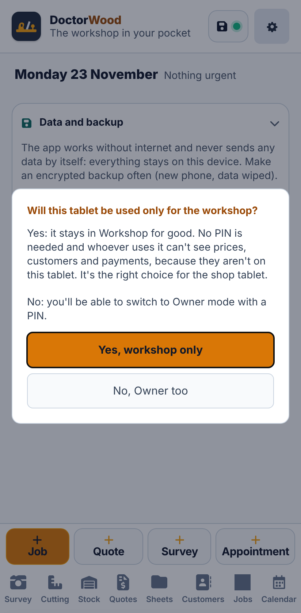
The «workshop only» question
The first time DoctorWood asks how you use this device:
Owner: on your phone. You get every section: surveys, quotes and prices, customers, cutting, stock, calendar. The app immediately suggests an emergency password and the fingerprint: it's worth doing (you can also do it later, from Settings).
Workshop: on the shop tablet. Full screen, large text, only the jobs to do, the parts to cut, the materials and the assembly sheets. No prices.
If you choose Workshop, the app asks one more question: Will this tablet be used only in the workshop?
Yes, workshop only: the tablet stays in Workshop mode for good. No PIN is needed and whoever uses it can't see prices, customers or takings, because they are simply not on that tablet. It's the right choice for the shop tablet.
No, Owner too: you set a PIN; with the PIN you can switch back to Owner.
On a device you used as Owner, switching to Workshop encrypts your data (with your fingerprint and the emergency password): to become Owner again you need the fingerprint or the password. There are no shortcuts. If the phone has no fingerprint you can use the screen-lock PIN or pattern.
On opening, the logo appears for a moment; if the lock is on, the fingerprint is then requested.
§§c3§§
3The Home
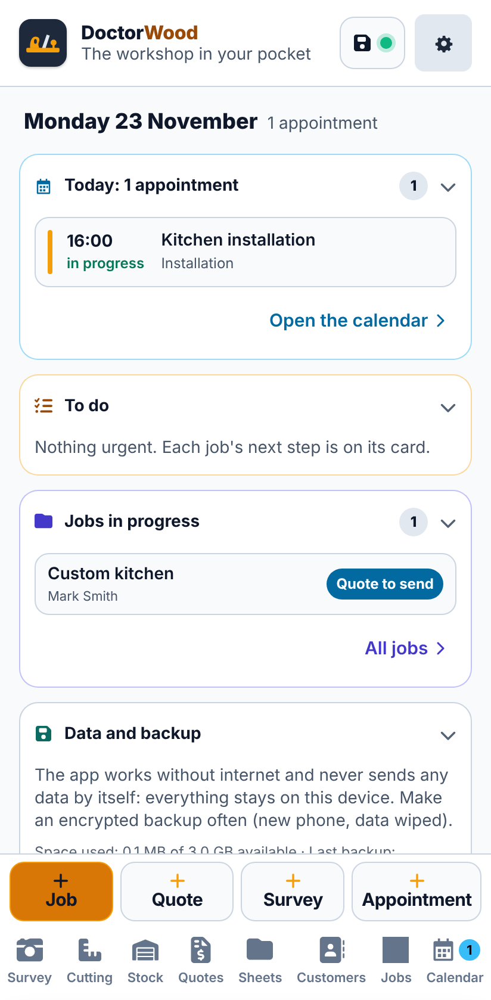
The owner's Home
At the top: the app name, the data indicator (green when everything is saved: tap it for details) and the gear for Settings.
Today: today's appointments; «Open the calendar» opens the calendar.
To do: what is urgent (quotes to send, stalled jobs, reminders). If there's nothing, it says so.
Jobs in progress: each job with its next step. «All jobs» opens the Jobs section.
Data and backup: space used, last backup, «Export backup», «Import backup», «Company details», «Check data».
Buttons at the bottom:+ Job, + Quote, + Survey, + Appointment to create things quickly. Below them is the bar of sections: Survey, Cutting, Stock, Quotes, Sheets, Customers, Jobs, Calendar.
Each box closes and opens again with its arrow. Pressing Back from any section returns to the Home.
When too long has passed since the last backup (14 days by default) a reminder appears on the Home.
§§p2§§
Part 2
Customers and jobs
Your customer records
Jobs: everything about a commission in one place, with its next step
On‑site surveys with photos
The calendar of appointments, installations and workshop days
§§c4§§
4Customers
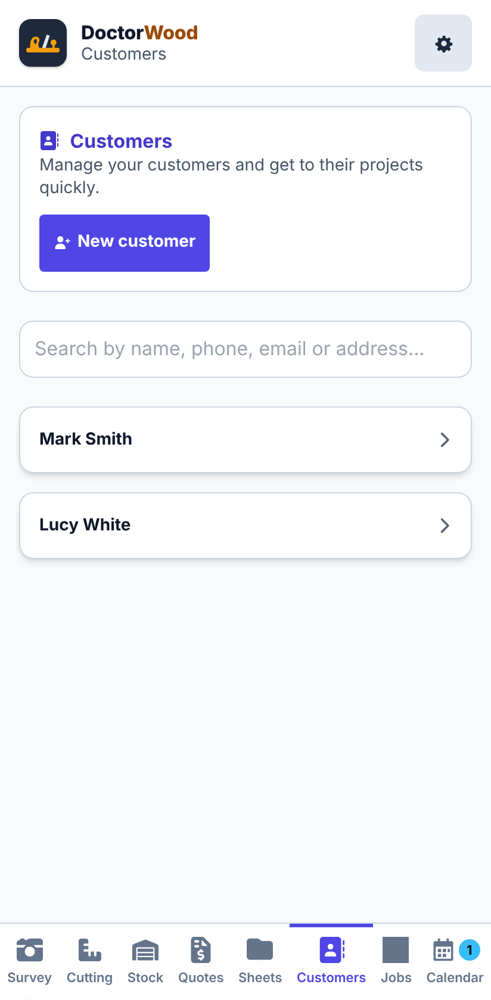
Customers
The Customers section holds your records: name, phone, email, address, VAT number or tax code and notes.
Tap New customer.
Write at least the name; the rest is optional.
Save. The customer can then be chosen from jobs, quotes, surveys and appointments.
Search finds by name, phone, email or address. Tapping a customer shows their details and jobs; from there you call or write to them with one tap.
You can also create a customer on the fly, while making a job or a quote, with «+ New customer…».
§§c5§§
5Jobs and guided paths
A job gathers everything about a commission: survey, quote, cutting, materials, appointments, installation, payment and notes.
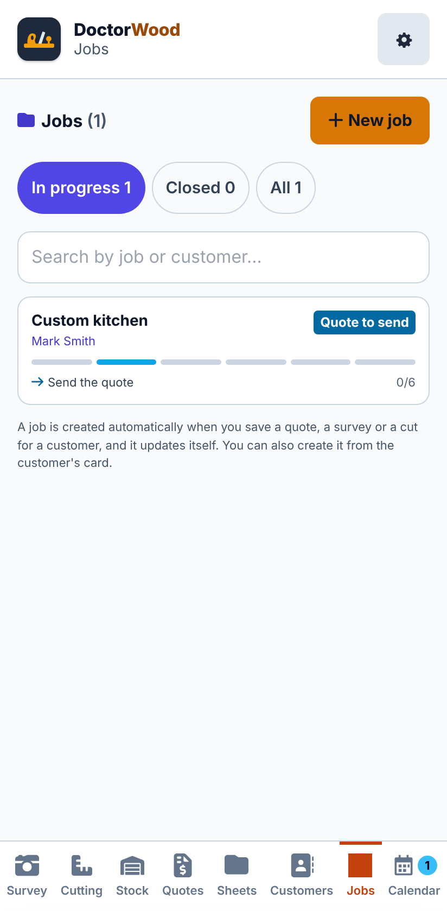
The Jobs section
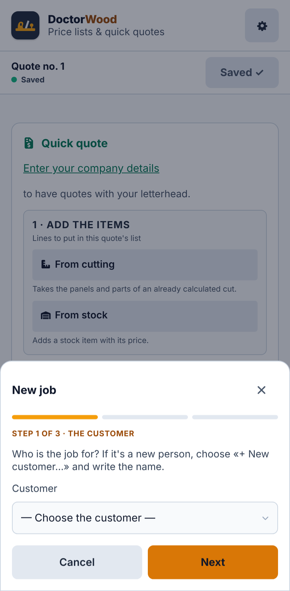
New job, step by step
The Jobs section has the filters In progress, Closed and All and a search by job or customer. Each job shows where it stands (for example «Quote to send») and a progress bar.
The guided path
+ Job opens a guided path in a few steps: first the customer (from the list or new), then the job name (e.g. «Kitchen to measure»), then what to do first. Next and Back move between steps; if you leave before the end the app asks for confirmation, because what you wrote would be lost.
The guided quote and a new survey work the same way.
The job card
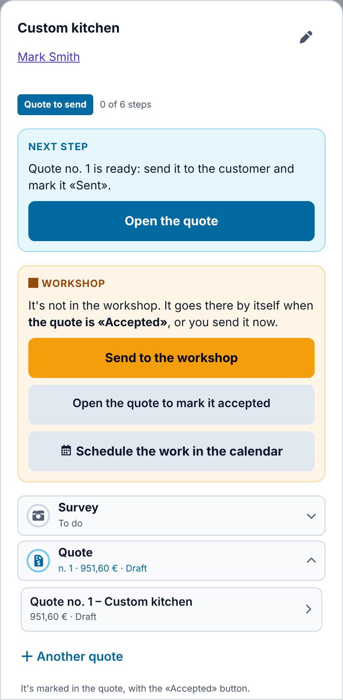
A job card
At the top is the Next step: the app tells you what to do now, with the button to do it (for example «Open the quote»).
Below is the Workshop box:
Send to the workshop: the job goes to the shop tablet with cutting and materials already prepared, even if the quote isn't accepted yet. Usually it goes by itself when the quote is «Accepted».
Schedule the work in the calendar: choose the first day and how many days are needed (1 to 60); with «Skip Saturday and Sunday» only weekdays are used. They appear in the Calendar as «Workshop work».
When the tablet sends its ticks, here you see From the workshop: how many parts are cut and how many materials were taken.
Then the parts of the job, which open with a tap: Survey, Quote, Cutting and Materials, Appointments and installation, Payment, Notes.
§§c6§§
6Site surveys with photos
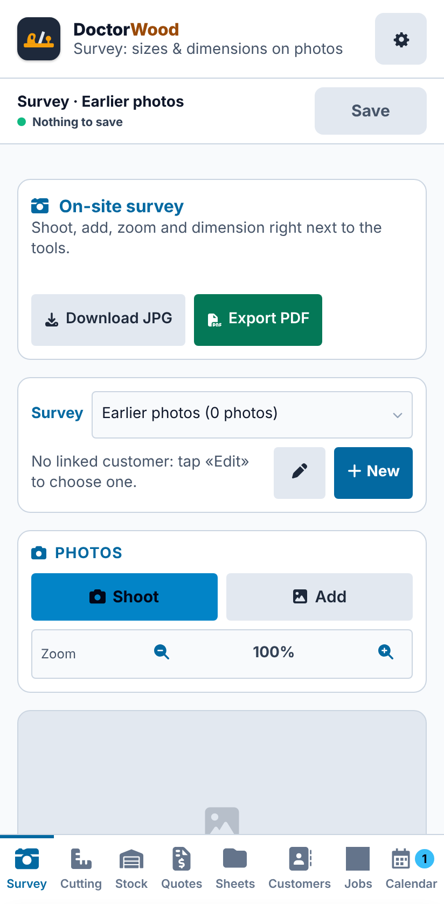
Survey
For taking measurements on site, on top of a photo.
Choose the survey and the linked customer (or «New»).
Tap Shoot for the DoctorWood camera, or Add to take photos from the gallery.
Tap the photo to place dimensions and notes: you can move them, enlarge them (A+ / A−) and rotate them.
With Zoom you enlarge the photo; with two fingers as usual.
Save at the top. For documents: Download JPG or Export PDF.
If you leave without saving, the app asks whether to save, leave without saving or stay.
The DoctorWood camera
Several photos in a row, flash, grid, level, Zoom with buttons or two fingers, focus by tapping the screen.
0.5× button (wide angle) if the phone allows it, choice of format (4:3, 16:9, 1:1) and HDR where available.
Photos are reduced to 2560 px and straightened. If you prefer, «Use the phone's camera».
§§c7§§
7Calendar
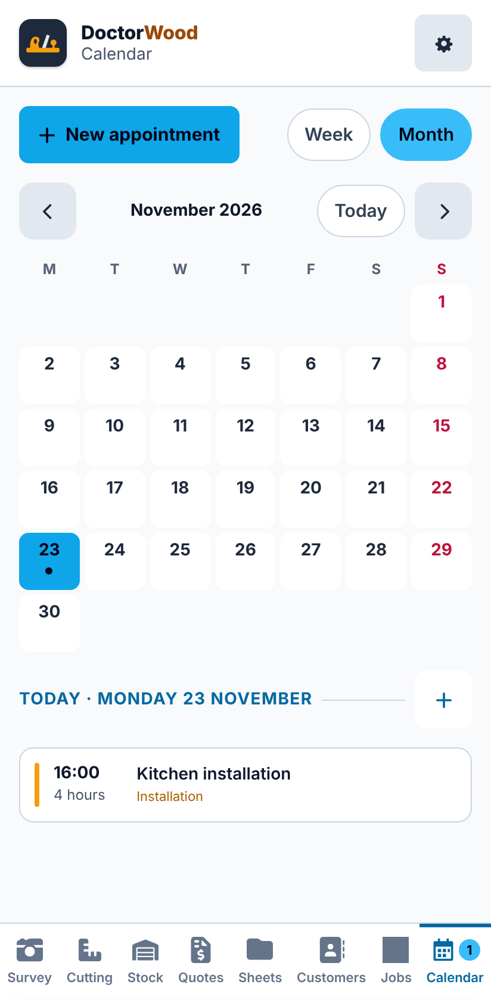
Calendar, month view
Week or Month view, arrows to move and Today to come back. From the month, tapping a day shows its appointments.
New appointment: type (survey, installation, delivery, workshop work…), title, customer, job, quote, time and duration.
Appointments are linked to jobs and appear on the Home, under «Today» and among the «To do» items.
Workshop days are put in the calendar all at once from the job card (chapter 5).
You can get a reminder before the appointment (Settings → Calendar).
§§p3§§
Part 3
Design and sell
Cutting panels with less waste, and comparing layouts
PDF quotes, customer signature, file for the accountant
Stock: price list, stock levels and offcuts
§§c8§§
8Panel cutting
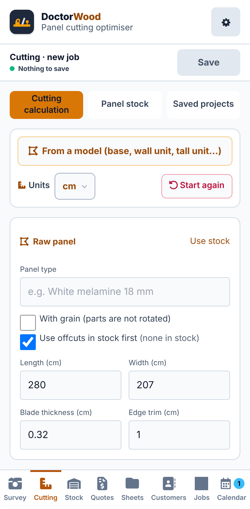
Cutting
Works out how to cut the parts from the panels with the least waste. At the top there are three tabs: Cutting calculation, Panel stock and Saved projects.
To start faster tap From a model: base, wall unit, tall unit…: write the cabinet's measurements and the parts fill themselves in. Or write them yourself.
Choose the unit (cm or mm). «Start again» clears everything, with confirmation.
In Raw panel choose the panel type (or Use stock), the size, the blade thickness and the edge trim.
Tick With grain if parts can't be rotated, and Use offcuts in stock first to recover leftovers.
Write the parts (length, width, quantity, edges) and tap Calculate: you see the panels drawn with the cuts and the percentage of waste.
Save at the top to resume it later. For documents: Cutting list PDF, Labels PDF, the table for the panel saw or the DXF.
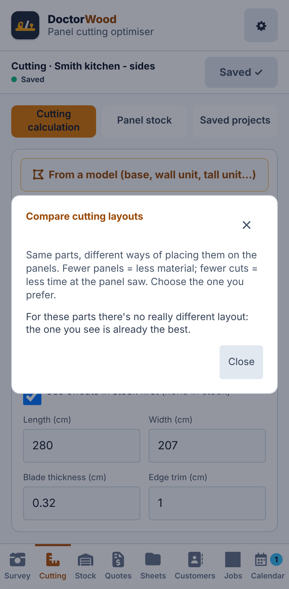
Compare the layouts
Comparing layouts
After the calculation, Compare with other layouts shows up to four different ways to arrange the same parts. For each you see the panels needed, the waste and the number of cuts: fewer panels means less material, fewer cuts means less time at the panel saw. With Use this layout you choose the one you prefer; drawing, list and labels follow your choice.
If there's no truly different layout for those parts, the app says so: the one you see is already the best.
Labels with a QR code
Part labels (PDF) have a QR code as well as the barcode. It's for the workshop tablet: just scan the label to find the part and mark it as cut (chapter 12). The QR contains no names or data, only a short code.
§§c9§§
9Quotes, signature and invoicing
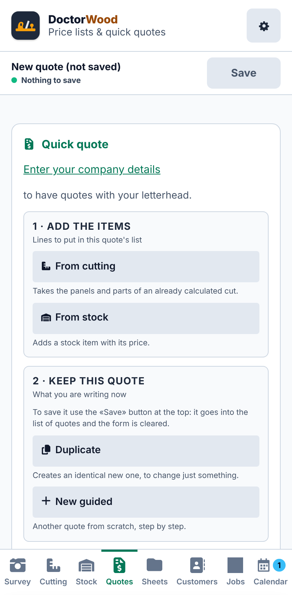
Quick quote
The quote is divided into groups, each with two lines of explanation:
Add the items: From cutting, From stock or an item written by hand.
Choose customer and job, set VAT, discount, deposit, validity and terms. Your company details appear in the header.
Keep this quote: Save puts it in the list; Duplicate creates an identical one to change; New guided starts another step by step.
Create the PDF and send it with Share. The status follows the job: Draft, Sent, Accepted, Declined.
Quotes have a progressive number, which you can set. «Set appointment» immediately creates an appointment for that job.
Photos, signature and invoice
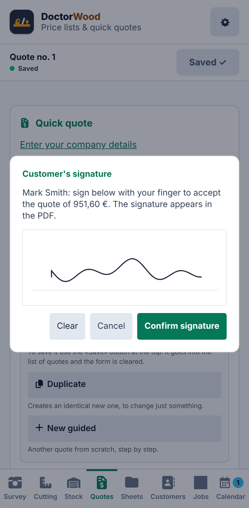
The customer signs with a finger
Survey photos: when you create the PDF, if the customer has survey photos (even with dimensions drawn on them) the app asks whether to attach them. They go at the end, two per page (12 at most).
Customer signature: opens a white space where the customer signs with a finger. Clear starts again, Confirm signature saves it. The signature appears in the PDF with date and time and the app offers to mark the quote as Accepted. If you later change items, prices, VAT, discount or deposit, the signature is no longer valid and doesn't appear in the PDF.
For the invoice: creates a file (CSV, it also opens in Excel) with the quote's rows, VAT and the customer's details, VAT number or tax code included, to give to your accountant. It isn't an electronic invoice: the accountant issues that.
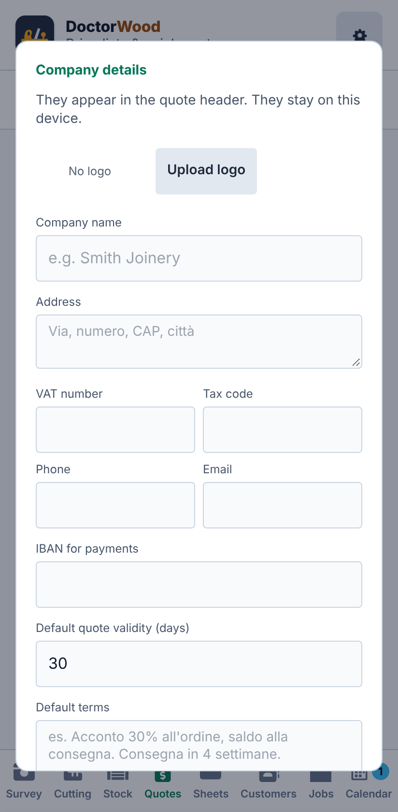
Company details
Your company details
Before quoting fill in Company details: name, address, VAT number, tax code, phone, email, IBAN (optional), logo, default quote validity in days and default terms (deposit, balance, delivery times).
They appear in the quote header and stay only on this device. The app checks that VAT number, tax code, email and IBAN are written correctly.
§§c10§§
10Stock
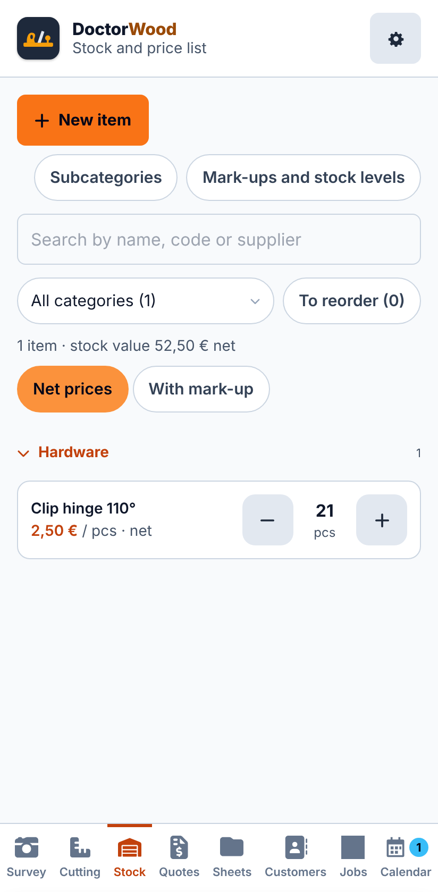
Stock
Your materials price list and stock levels.
New item: name, code, supplier, category and subcategory, unit, price and quantity.
Search by name, code or supplier; filter by category.
The − / + buttons on the row update quantities on the spot.
An item below the minimum stock ends up in To reorder.
At the top you see how many items you have and the stock value. Net prices / With mark-up changes how prices are shown.
Mark-ups and stock levels: mark‑up per category and minimum stock.
Offcuts from cut panels are found in Cutting → Panel stock, ready to reuse.
§§p4§§
Part 4
In the workshop
Assembly sheets, always at hand
The shop tablet: jobs, parts, materials, ticks
Connecting the owner's phone and the tablet, on the same Wi‑Fi
§§c11§§
11Assembly sheets
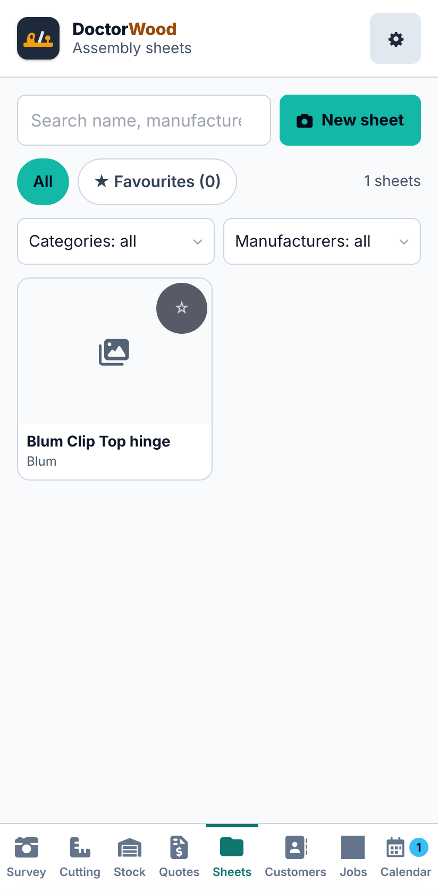
Sheets
The archive of product technical sheets (hinges, runners, hardware…) with photos and assembly instructions.
New sheet: title, manufacturer, category and photos (taken on the spot too) or a PDF.
Search by name or manufacturer, filter by category and manufacturer, mark Favourites with the star.
Open a sheet to read it or to open its PDF with the phone's app.
The workshop tablet opens the sheets too, with the Sheets button.
§§c12§§
12The workshop tablet
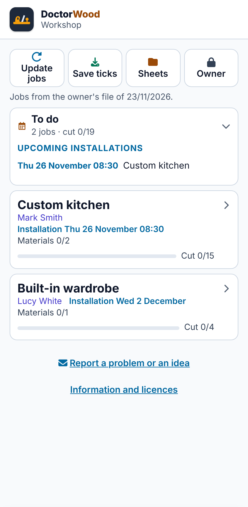
Workshop
On the shop tablet DoctorWood shows only the jobs to make, full screen and with large text.
To do: how many jobs there are, how many parts are already cut and the upcoming installations in the next 7 days.
Each job shows customer, installation date and progress. Tapping it opens the parts to cut and the materials to take: tick them with one tap. When everything is ready, mark Ready for installation.
Update jobs: receives the jobs from the owner's phone at once.
Save ticks: sends what's done to the owner.
Read label: scan the QR on a cutting label: the app shows the part and, if you confirm, marks it as cut.
Sheets: the assembly sheets.
Owner: to return to owner mode (fingerprint, PIN or emergency password). On a «workshop only» tablet this button isn't there.
What reaches the tablet
For each job sent to the workshop only these arrive: the title, the customer's name and the installation address, the installation date, the parts to cut with material and edges, the materials with quantities. Never prices, costs, VAT, takings, phone numbers, emails, VAT numbers or customer notes. An automatic test checks this in every version.
The tablet stays Android's «Pin app»: whoever picks it up can't leave the app.
§§c13§§
13Connecting phone and tablet
Phone and tablet talk on the same Wi‑Fi, with no cloud, over an encrypted connection and only between paired devices.
On the phone: Settings → «Owner and workshop» → «Sync with the workshop» → Direct (Wi‑Fi). The code and the QR appear (valid for 10 minutes).
On the tablet: Workshop → «Connect sync» → Direct (Wi‑Fi) → scan the QR (it connects by itself) or type the code.
From then on it's automatic: after every change, when you reopen the app, when Wi‑Fi comes back.
Another tablet: Settings → «Pairing code» reopens pairing for 10 minutes. With three devices, pairing one is enough: the others introduce themselves.
Tablet always reachable: it keeps listening with the screen off during working hours (for example Mon–Sat 7–19; change it from Workshop → Sync → «Hours and more…»). Best kept on charge.
Tablet lost or stolen: «Paired devices» → Forget; or Change code: all devices are forgotten and reconnect with the new code.
Jobs are signed by the owner: the tablet rejects any file the owner didn't sign.
Alternatively you can sync through a folder kept aligned by another app (Syncthing, Autosync or FolderSync with Drive): DoctorWood only writes encrypted files there.
§§p5§§
Part 5
Your data
The encrypted backup, and how to restore it
How DoctorWood protects your data
§§c14§§
14Backing up your data
Back up often: if you change phone or erase the data, it's the only way to get everything back.
Export backup: choose a password (at least 12 characters, not repetitive) and where to save the file. The backup is always encrypted.
Import backup: choose the file and type the password. Before replacing the data the app checks the file; if it can't be imported, it says why.
Check data checks that the archive is in order.
The indicator at the top tells you if something needs doing; a reminder appears when too long has passed since the last backup (every 14 days by default, change it in Settings → Data and backup).
Don't lose the backup password: there is no way to recover it.
Keep the backup file off the phone (on a computer, a USB stick or Drive): being encrypted, nobody can read it without the password.
§§c15§§
15Security and privacy
Works without internet. The app page has no network access. Only the sync module (PairWood), over Wi‑Fi with your paired devices, and the update check, which reads from GitHub once a week (can be turned off), use the network.
Encrypted workshop mode. On a device used as Owner, switching to Workshop encrypts the owner's data with AES‑256 and a key kept by Android and tied to your fingerprint. If the enrolled fingerprints change, the emergency password is needed. Before enabling the vault the app asks you to check that the phone has only your fingerprints.
«Workshop only» tablet. On the shop tablet the owner's data simply isn't there: only the jobs to make arrive (chapter 12).
Owner lock. On opening and on returning to the app, the fingerprint or PIN is requested. Not when you pick a file, take a photo, save or share from the app itself (unless you were away a long time). Recent apps don't show the content.
Encrypted backups only, with minimum password strength checked.
No traces. Data stays in the app's private folders (gone when uninstalled) and isn't included in Google's backup. Erase everything from this device removes data, keys, permissions and sync files.
§§p6§§
Part 6
Settings and help
Every setting, one by one
What to do when something goes wrong
Writing to us and supporting DoctorWood
What's new in each version
§§c16§§
16Settings
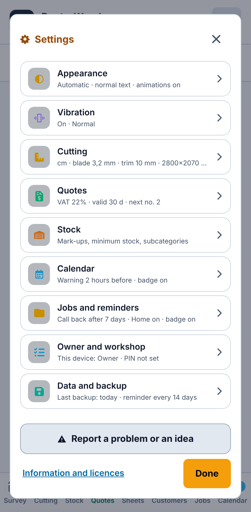
Settings
They open from the gear. Each item opens with a tap; tapping outside or Done closes them.
Appearance: theme (automatic, light, dark), animations, language (Automatic, Italiano, English), text size (Normal, Large, Very large), screen smoothness. The theme changes instantly, with no flicker.
Jobs and reminders: reminders after some days, Home boxes.
Owner and workshop: mode, PIN, sync, paired devices, pairing code, «Change code», «Pin app». On a «workshop only» tablet the options to become Owner aren't there.
Data and backup: backup, reminder, import and «Erase everything from this device».
Updates: weekly check, «Check now», «Update».
At the bottom: Support DoctorWood, Report a problem or an idea and Information and licences (chapter 18).
§§c17§§
17If something goes wrong
What happens
What to do
The tablet doesn't receive jobs
Check that phone and tablet are on the same Wi‑Fi (not the guest one) and that the job was sent to the workshop. On the tablet tap «Update jobs».
The pairing code doesn't work
It's valid for 10 minutes: reopen it from the phone («Pairing code») and scan the QR or type it again.
It asks for the emergency password
This happens if the fingerprints enrolled on the phone changed. Type it: the fingerprint is linked again.
The «workshop only» tablet must become Owner
It can't, by design: that way nobody in the shop sees your data. If really needed, clear the app's data in Android settings and redo the first start.
The backup won't import
Check the password (capitals and small letters) and that the file is a DoctorWood backup. The message says why; if that's not enough, report it.
I need to print a document
DoctorWood doesn't print: create the PDF (or the other formats) and print it from the app that opens it, or send it to whoever needs to print it.
It doesn't find updates
It needs internet. In Settings → Updates tap «Check now»: the message says how it went. If Android asks for permission to install apps, turn it on and go back.
Something else
Settings → Report a problem or an idea, with the technical information.
§§c18§§
18Contact, reports and support
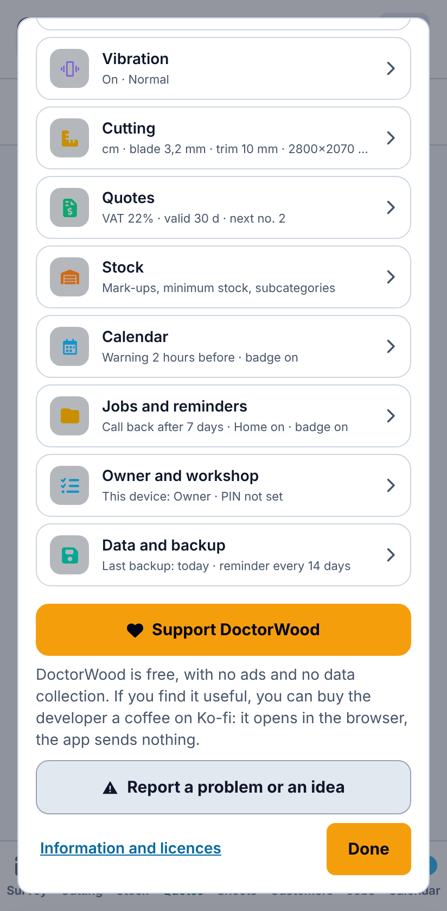
At the bottom of Settings
Report a problem or an idea
At the bottom of Settings tap Report a problem or an idea.
Choose A problem or An idea and describe it in a few words. Leave the technical information on: it helps us understand.
Tap Send by email: your email app opens with the message ready for crslabs.info@gmail.com. It leaves only when you send it. You can write in English.
Support DoctorWood
DoctorWood is free, with no ads and no data collection. If you find it useful, in the Android app the Support DoctorWood button opens ko-fi.com/crslabs in the browser, where you can buy the developer a coffee. The app sends nothing.
Information and licences
App version, developer (CrsLabs), contacts and licences of the components used. DoctorWood is free software (GNU GPL 3.0): the code is at github.com/CrsLabs/DoctorWood.
§§c19§§
19What's new, version by version
A row is added with each new version.
Version
What's new
1.2.2
Date and time pickers in the app style, like DoctorCar: they open from the bottom, you choose and confirm; tapping the month lets you pick the year.
1.2.1
Notifications appear at the bottom and close by swiping them; smoother Settings sections on less powerful phones.
1.2.0
DoctorWood in English: Settings → Appearance → Language (Automatic, Italiano, English); PDFs, the camera and the fingerprint prompts follow the chosen language too.
1.1.1
Settings like DoctorCar: Appearance in the same order (theme, animations, text, screen smoothness), the same Updates section; the same light‑theme background in all three apps.
1.1.0
Automatic updates from GitHub (on the tablet too); DoctorWood becomes free software (GPL 3.0); «workshop only» tablet on first start (no PIN, none of the owner's data); automatic check of what reaches the tablet; PairWood 0.18.7 sync; a single version number; information in the name of CrsLabs; guide and tutorials reorganised.
1.0.43–45
Bottom of Settings like the other CrsLabs apps (Support and Report); theme changes in one go, with no flicker; status bar readable with the light theme too.
1.0.42
No message stays more than 10 seconds; reports to crslabs.info@gmail.com; Support DoctorWood.
1.0.41
Cutting: compact top part (tabs on one row, small «Start again» next to the unit).
1.0.40
Printing removed everywhere (PDF and the other formats remain); Cutting without «Example».
1.0.38
The same save bar in every section; leaving with three choices (save, don't save, stay).
1.0.36
Send to the workshop; workshop days in the calendar; Quotes split into groups with explanations.
1.0.32–35
Separate Jobs section and guided paths; calendar opens on the month; complete, checked company details; choice of unit; saving with a choice of folder.
1.0.28
Compare cutting layouts; QR on labels and Read label in the Workshop; customer signature and survey photos in the quote PDF; For the invoice and VAT number/tax code for customers.
1.0.26–27
Fingerprint lock only when the app really leaves the foreground; tablet listening with less battery; cancelling a transfer.
1.0.18–25
QR pairing; «Workshop» box on the Home; vibration on every button; opening with the logo; clear messages when a backup can't be imported.
Sync uses PairWood, the engine written from scratch together with the CrsLabs apps.